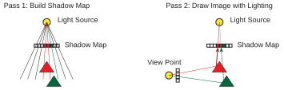
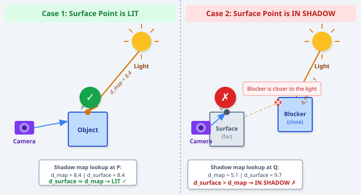
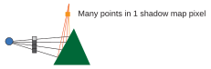
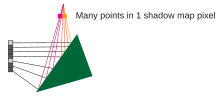
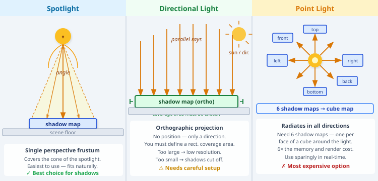
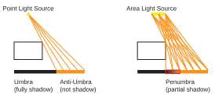

Page 14: How Shadow Maps Work
Shadow maps are one of the most elegant techniques in real-time graphics: they solve a hard problem (shadows) by cleverly reusing the machinery we already have for drawing pictures. This page explains how they work and why they work.
Shadow maps are built into Three.js. However, if you don’t understand how they work, you will not be able to use them effectively. There are some quirks in how they work that have real ramifications for how we use them. Plus, it’s a really cool idea. And, they are yet another thing invented by Lance Williams (who also invented mipmaps).
The local lighting assumption means that lighting computations cannot depend on other objects - only the one being lit. To account for other objects, we put information about them into a texture map. A shadow map is a kind of texture map that is associated with a light source - not an object. The map contains a picture of what the light source “sees.” The texture coordinates for a given point are determined by where in the texture the point appears.
Shadow maps are different from other kinds of maps. They are pictures made from cameras positioned at the light sources. We don’t use them for colors (or surface properties), we use them for depth testing (to see if the camera at the light source can see each point in the scene). The lookups are depth tests that turn light on and off. The video lecture that discusses this is:
Here is a written explanation based on that lecture.
Why Shadows Matter
Without shadows, a scene can look strangely flat and unreal — objects seem to float above the ground, and it is hard to judge spatial relationships. A shadow tells you where something is, and also where the light is. They are a critical visual cue.
There are many ways to compute shadows. Ray tracing, for example, can compute them naturally: for every visible surface point, fire a ray toward the light and see if anything blocks it. But ray tracing is expensive. Shadow maps are the standard real-time solution because they map perfectly onto how GPUs draw pictures.
Note: Shadow maps are only one way to do shadows. Other techniques (shadow volumes, ray tracing, screen-space ambient occlusion, voxel cone tracing) exist and each has trade-offs. The details of the best approach also change as GPU hardware evolves. But the shadow map idea is foundational and still widely used.
The Core Idea: Can the Light See the Object?
We already know how to answer the question “can the camera see this point?” — that is exactly what the rendering pipeline does. When we draw a scene, the renderer figures out which objects are visible to the camera and what color each pixel should be.
The key insight for shadow maps is: apply the same question to the light source.
If the light can “see” a surface point, that point is illuminated. If something else is in the way — if the light’s view of that point is blocked — then the point is in shadow.
So we put a virtual camera at the light source, look outward from the light, and ask: what does the light see?
{kind=link}

Schematic of Shadow Map Process. In a first rendering pass, an image is drawn from the light source. The shadow map stores what the light source sees, although it stores depth not color. In the drawing pass, each drawn point checks its lighting by determining where it would appear in the shadow map. If the point is what is visible (the depths match), then the point is lit; otherwise, a different object is blocking the light source and the point is in shadow.
Importantly: the shadow map image is just a picture taken from the light source’s viewpoint. It can use exactly the same drawing mechanism that we use to draw for the regular image. We just use a different camera (placed at the light source), and ignore the colors (but keep the Z-buffer).
The Two-Pass Algorithm
Shadow mapping works in two rendering passes.
Pass 1 — Render the Shadow Map
Place a virtual camera at the light source, pointed in the direction the light shines. Render the scene from this viewpoint. The result is a texture — an image of what the light sees. This is the shadow map.
What does the shadow map store? Not color. What we care about is depth: for each pixel in the shadow map, how far away is the closest surface the light can see? This is stored as a depth value, just like the depth buffer that the regular renderer uses. The shadow map is, in essence, the depth buffer from the light’s point of view.
The Shadow Map Visualizer shows exactly this: the left panel is the normal camera view with shadows rendered, and the right panel is the same scene rendered from the spotlight’s position, with a depth shader applied (white = close to the light, black = far). As the light rotates, you can watch the two views update together and see how the shadow map drives the shading in the camera view.
Pass 2 — Render the Regular Picture
Now draw the scene from the regular camera. For each surface point that the camera sees, we need to decide: is this point in shadow or not?
The test works like this:
- Take the 3D position of the surface point.
- Transform that position into the light’s coordinate system — in other words, figure out where this point would appear in the shadow map.
- Look up the depth stored in that shadow map pixel.
- Compare: is the depth of this surface point (as seen from the light) the same as the depth stored in the shadow map?
If yes: the light can see this point, and the point is lit.
If no (specifically, if the surface point is farther from the light than what the shadow map records): something closer to the light was recorded in the shadow map — something is blocking the light. The point is in shadow.
{kind=link}

The shadow map depth test applied to two surface points. Left (green ✓): the shadow map records depth d_map = 8.4 for that light direction, and the surface is also at depth 8.4 — they match, so the point is lit. Right (red ✗): the shadow map records d_map = 5.1 (the blocker object), but the surface being tested is at depth 9.7 — since the surface is farther than what the shadow map recorded, something is in the way, and the point is in shadow. Figure by Claude.
This is called the shadow map test or shadow test. Here is the idea summarized as pseudocode:
for each pixel P in the camera image:
find the 3D point X that P sees
project X into the light's coordinate system (get u,v)
look up the shadow map at (u, v) → get stored depth d_map
if d_surface ≈ d_map:
X is lit
else: // d_surface > d_map
X is in shadow
Demo: Seeing Shadow Maps in Action
The demo shows a scene with shadow mapping. You can control the lighting type and direction. You can also control the resolution of the shadow map.
Notice how the shadows get blocky and fuzzy when the shadow map has insufficient resolution. We’ll return to this in a bit…
Some important Details
Why Depth, Not Color?
You might wonder: why compare depths rather than colors? If the shadow map stores the color of what the light sees, couldn’t we just check whether the colors match?
No — this breaks immediately if two different objects happen to have the same color, or if the same object has a uniform color. Depth is a much more reliable identifier of a surface point: it is continuous, unique (two surfaces at different depths will have different depth values), and exactly what the depth buffer gives us for free.
Depth Precision
Depth comparison sounds simple, but in practice there is a numerical problem. The depth of a surface point, computed from the regular camera, and the depth stored in the shadow map were computed using different transformations and different floating-point arithmetic. The two values will almost never be exactly equal, even for a point that is clearly lit.
This problem is even worse if the resolution of the shadow map is low (the pixels are big). Many (valid) surface points might map to the same pixel.
{kind=link}

Many points can map to the same shadow map texel.
This problem can lead to an ugly effect where spots on an object can be in (or out) of shadow based on how their pixels are grouped into the shadow map. This effect is sometimes called shadow acne because it causes splotches.
{kind=link}

These problems mean a naive depth test (d_surface == d_map) will fail constantly. We need a better depth test to cure them.
The typical fix is to add a small bias: instead of asking “are the depths equal?”, we ask “is the surface depth close enough to the shadow map depth?” — formally, d_surface < d_map + bias.
If the bias is too small, the surface incorrectly shadows itself in a blotchy pattern called shadow acne (or self-shadowing artifacts). If the bias is too large, objects appear to float above their shadows — a different artifact called peter panning. Getting the bias right is a classic shadow map tuning problem.
We tried to make a demo to show this effect, but, it doesn’t show up very well. I believe that three.js is doing some mitigation strategies under the hood. In order to intentionally make the problem bad enough to see, other artifaces (such as the blockiness of low-res shadow maps) become more of a problem. For an excellent tutorial on the topic see the shadow Acne tutorial that is part of a broader tutorial on Shadow Mapping (and OpenGL more generally).
There are also more sophisticated solutions, like slope-scale bias (adapting the bias based on the angle of the surface relative to the light). These are refinements on the basic idea of adjusting bias.
Shadow Map Resolution
The shadow map is a texture, and like all textures, it has a finite resolution. This matters because the shadow map has to cover everything the light can see. If the shadow map is small, or if the light covers a large area, each shadow map pixel covers a large region of the scene — and shadow edges will look blocky and aliased.
How large the shadow map needs to be depends on the type of light.
{kind=link}

Shadow maps and light types. A spotlight (left) covers a cone with a single perspective frustum — the easiest and most natural fit. A directional light (center) uses an orthographic projection over a chosen rectangular area; the coverage must be set carefully. A point light (right) radiates in all directions and requires six shadow maps arranged into a cube map, one per face — the most expensive option. Figure by Claude.
Spotlights (the easy case)
A spotlight illuminates a cone. The shadow map is just one perspective image taken from the spotlight — the same projection you’d use for a camera with the same field of view. This is the most natural fit for shadow maps, and why THREE.js (and most real-time engines) prefer spotlights when you want shadows.
Directional Lights (like sunlight)
A directional light has no position — it just has a direction, and all rays are parallel. The shadow map uses an orthographic projection (no perspective foreshortening) over a chosen rectangular area of the world. The tricky part is choosing the right area: too small, and distant objects lose their shadows; too large, and the shadow map’s resolution is wasted on empty space far from the camera. Many production engines use cascaded shadow maps — multiple shadow maps at different scales, covering near, mid, and far distances — to get good resolution everywhere.
Point Lights (the expensive case)
A point light shines in all directions. To capture everything it can see, you need a shadow map for every direction: in practice, six shadow maps forming a cube map (one for each face of a cube surrounding the light). This is expensive and more complex to set up, which is why point lights with shadows are used sparingly.
Soft Shadows
When there is insufficient resolution in the shadow map, the shadows look blocky and fuzzy (go back to the demo above and try it). But these artifacts (forms of aliasing, and the effects of anti-aliasing to combat them) are artifacts: they are not actually modeling the nice shadows we see in the real world.
Soft shadows are a phenomenon that happens in the real world. The alternative, hard or harsh shadows, is generally not desirable. Photographers and lighting designers use special lights (large light sources, bounce umbrellas, etc.) to avoid harsh shadows. The problem can be worse in computer graphics because of the way we do lighting. It is also hard to address in the standard computer graphics pipeline.
When a light source is small (in the limit, just a point), the boundary between shadow and non-shadow is severe. This causes very distinct, harsh shadows. However, if the light source is large (it has area), the transition is more gradual.
Here is a diagram showing the difference:
{kind=link}

With a point light source, any target point can either see the light source or not, causing a hard cutoff for the shadow. With an area light source, some points can see some of the light source, causing a gradual transition from shadowed to unshadowed.
Shadow maps do not support soft shadows directly. The most common trick to fake soft shadows is to simulate an area light source as a collection of point sources (usually spot lights). However, this requires a different shadow map for each light source, and becomes expensive quickly.
Hack Lighting
Shadow maps — along with environment maps, normal maps, and the other texture techniques in this series — are sometimes called “hacks.” That might seem like an insult, but it is a precise description: they are not physically correct solutions to the lighting problem. They approximate the right answer in ways that can fail under the right (or wrong) circumstances.
The reason we use them is that they run efficiently on graphics hardware. The GPU is designed to render triangles, apply texture lookups, and run shading programs on millions of pixels simultaneously. Shadow maps play to exactly these strengths: render some geometry, store the result in a texture, look it up later. This is what the GPU does best.
Could we do shadows more correctly? Yes — ray tracing computes exact shadows with no bias artifacts, no resolution limits, and correct soft-shadow penumbrae from area lights. And indeed, modern real-time ray tracing hardware (NVIDIA RTX, for example) is starting to make ray-traced shadows practical. But shadow maps remain the workhorse for real-time rendering because they are fast, controllable, and well-understood.
This is the broader lesson: the “texture hacks” we’ve seen — normal maps, environment maps, shadow maps, ambient occlusion maps — are all clever uses of the GPU’s core strength (fast texture lookups) to approximate expensive physical phenomena. That is not a bad thing. It is good engineering.
Summary
Shadow maps implement shadows through two rendering passes:
- Shadow map pass: render the scene from the light’s viewpoint and store a depth image (the shadow map).
- Camera pass: render the scene from the camera’s viewpoint; for each visible surface point, test its depth against the shadow map to decide if it is lit or in shadow.
The depth test is the heart of the algorithm: a surface is in shadow if something closer to the light was recorded at the same shadow-map location. The main practical challenges are depth precision (bias tuning), shadow map resolution, and handling different light types. THREE.js wraps all of this up with four properties: renderer.shadowMap.enabled, light.castShadow, object.castShadow, and object.receiveShadow.
Continue to the exercise on the Next: Page 15 - Shadow Maps in Three.js page, where we will make use of the shadow map implementation in THREE.js.
Next: Page 15 - Shadow Maps in Three.js